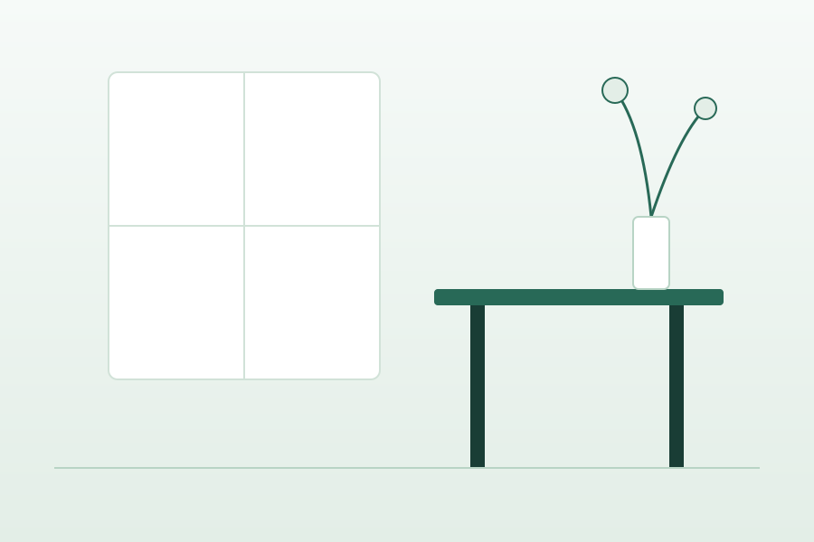

Η φροντίδα ξεκινά με σαφή ενημέρωση.
Ένα ήρεμο ιατρικό website concept που οργανώνει τις πληροφορίες για υπηρεσίες, επίσκεψη και επικοινωνία σε μία καθαρή εμπειρία.
Πριν από την επίσκεψη
Συγκέντρωση εγγράφων
Προηγούμενες εξετάσεις, φαρμακευτική αγωγή και σημειώσεις ιστορικού.
Καταγραφή ερωτήσεων
Σημειώστε βασικά σημεία για να συζητήσετε με σαφήνεια κατά το ραντεβού.
Έγκαιρη προσέλευση
10–15 λεπτά νωρίτερα για την ήρεμη ολοκλήρωση της γραμματειακής υποδοχής.
Ενότητες Φροντίδας
Ενδεικτική δομή παρουσίασης υπηρεσιών ενός σύγχρονου ιατρείου, σχεδιασμένη για διαφάνεια και εύκολη κατανόηση από τον επισκέπτη.
Πρωτοβάθμια φροντίδα
Ενδεικτική ενότητα παρουσίασης υπηρεσιών ενός ιατρείου, προς οριστικοποίηση από πραγματικό επαγγελματία υγείας.
Προληπτικός έλεγχος
Χώρος για την παρουσίαση διαθέσιμων ελέγχων ρουτίνας μετά από επιβεβαίωση των πραγματικών παροχών και εξοπλισμού.
Παρακολούθηση φροντίδας
Ενδεικτική κατηγορία για την οργάνωση πληροφοριών σχετικά με επόμενες επισκέψεις, θεραπευτική πορεία και οδηγίες.
Ενημέρωση επίσκεψης
Συγκεντρωμένη παρουσίαση της διαδικασίας επικοινωνίας, ωραρίου λειτουργίας και προγραμματισμού ραντεβού.

Οι πληροφορίες που χρειάζεσαι, σε ένα σημείο.
Το Areti Medical παρουσιάζει τον τρόπο με τον οποίο ένα ιατρικό website μπορεί να μειώσει τη σύγχυση και να οργανώσει την επικοινωνία. Δεν αποτελεί πραγματικό ιατρείο, ιατρική συμβουλή ή υπηρεσία υγείας.
Στόχος του σχεδιασμού είναι η αποφυγή υπερβολικών ιατρικών ισχυρισμών, η προτεραιότητα στην προσβασιμότητα και η παροχή ενός ήρεμου ψηφιακού περιβάλλοντος για κάθε επισκέπτη.
Οργάνωση ΕπίσκεψηςΔιαδικασία Επίσκεψης
Πώς ένα ιατρικό website μπορεί να καθοδηγεί τον πολίτη με απλά, δομημένα βήματα.
Προετοιμασία
Συγκέντρωση βασικών πληροφοριών και ιστορικού χωρίς περίπλοκες γραφειοκρατικές απαιτήσεις.
Καταγραφή ερωτήσεων
Δημιουργία σαφούς λίστας αποριών για αποτελεσματική αξιοποίηση του χρόνου με τον ιατρό.
Προγραμματισμός
Επικοινωνία με το πραγματικό ιατρείο για επιβεβαίωση της διαθεσιμότητας και της ώρας.
Ερωτήσεις & Απαντήσεις
Μπορώ να λάβω ιατρική συμβουλή από τη σελίδα;
Όχι. Το περιεχόμενο είναι σχεδιαστικό δείγμα και δεν παρέχει ιατρικές οδηγίες, διαγνώσεις ή θεραπευτικές συστάσεις.
Πού βρίσκονται τα στοιχεία του ιατρού;
Δεν έχουν δοθεί πραγματικά στοιχεία. Πρέπει να συμπληρωθούν και να επιβεβαιωθούν από εξουσιοδοτημένο επαγγελματία υγείας πριν από οποιαδήποτε εμπορική χρήση.
Δες πώς θα λειτουργούσε η επικοινωνία
Η παρακάτω φόρμα είναι μια τοπική δοκιμή της εμπειρίας χρήσης. Μην εισάγεις πραγματικά προσωπικά ή ευαίσθητα δεδομένα.
Για λόγους δεοντολογίας και ασφάλειας, η δοκιμαστική φόρμα δεν περιλαμβάνει πεδία συμπτωμάτων ή ιατρικού ιστορικού.